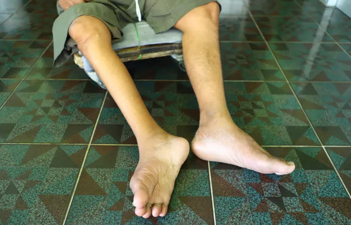
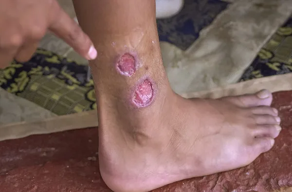
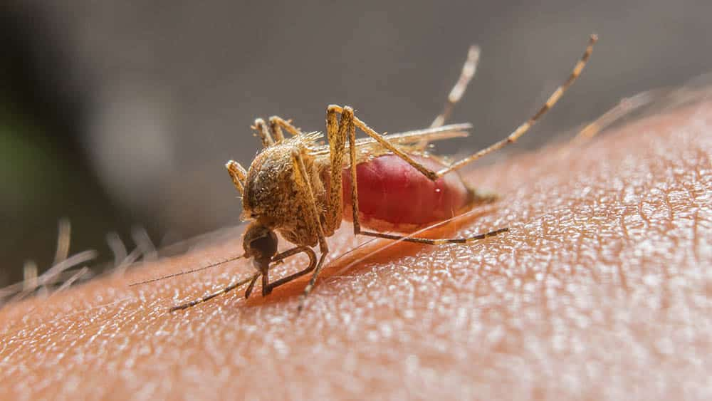

Doenças
Aqui será apresentado algumas das principais doenças dos microorganismos Vírus, Bactérias e Protozoários.
Sarampo
Doença infecciosa grave, causada por um vírus, sua transmissão ocorre pelo contato direto com a pessoa contaminada - através da partículas da tosse, fala, ou espirro. Se houver complicações a doença pode causar pneumonia, otite, encefalite aguda e até a morte.
Poliomielite
Doença contagiosa aguda causada, podendo infectar adultos e crianças - através do contato direto com fezes ou secreções de pessoas contaminadas - podendo acarretar a paralisia muscular.
Febre Amarela

Doença infecciosa grave, causada por vírus e transmitida por mosquitos - principalmente em países da América do Sul, Central e África. Os principais sintomas são a febre alta, calafrios, cansaço, dor de cabeça, dor muscular, náuseas e vômitos por cerca de três dias.
HIV
Infecção sexualmente transmissível que afeta o sistema imunológico. Com isso, o sistema de defesa vai pouco a pouco perdendo a capacidade de responder adequadamente, tornando o corpo mais vulnerável a doenças.
Hepatite B

Infecção grave que pode afetar o fígado, mas inicialmente pode não haver sintomas, o que dificulta o diagnóstico. A doença pode se desenvolver em duas fases: crônica ou aguda - definidas pelo tempo de duração. A transmissão pode acontecer de forma vertical, sendo passada de mãe para filho na gestação.
Tétano
Infecção causada pela bactéria Clostridium tetani, a contaminação ocorre a partir do contato de um ferimento aberto com local infectado. Se não for tratada de forma correta pode causar a morte, ou problemas de saúde graves como complicações respiratórias, renais e infecciosas.
Coqueluche
Infecção causada pela bactéria Bordetella pertussis, a transmissão é feita pelo contato direto com uma pessoa infectada que passa a doença pelas gotículas de saliva ou em contato com objetos contaminados. Os principais sintomas são tosse seca, febre e problemas respiratórios, por afetar diretamente a traquéia e brônquios.
Leptospirose
Infecção causada pela bactéria Leptospira, a contaminação ocorre pela exposição direta ou indireta com urina de animais infectados - principalmente os ratos. Geralmente, a incidência desses casos aumentam em locais que não possuem infraestrutura sanitárias adequadas. Sem tratamento, a leptospirose pode causar danos renais e hepáticos e até mesmo a morte.
Tuberculose
Infecção causada pela bactéria Mycobacterium tuberculosis sendo transmitida por via respiratória, pela eliminação de aerossóis produzidos pela tosse. A doença afeta os pulmões, porém, pode ser apresentada em forma extrapulmonar que chega a outros órgãos.
Pneumonia
Doença que pode ser causada por bactérias, vírus e fungos. Pode ser adquirida pelo ar, saliva, secreções, transfusão de sangue ou, no caso do inverno, devido a mudanças bruscas de temperatura. A doença causa tosse com secreções sanguíneas e febre alta.
Doença de Chagas

Infecção causada pelo protozoário Trypanosoma cruzi sendo transmitido, principalmente, pelas fezes do barbeiro que entram no sangue após a coceira no local. Os principais sintomas são: febre prolongada, fraqueza, inchaço no rosto e pernas. Em caso de complicações pode acarretar problemas cardíacos e digestivos.
Leishmaniose
Zoonose de evolução crônica que é transmitida através da picada de mosquitos infectados. Seus principais sintomas são febre de longa duração, aumento do fígado e baço, fraqueza e anemia.
Tricomoníase
Infecção sexualmente transmissível, causada por um protozoário Trichomonas vaginalis. Os sintomas são corrimento amarelado com mau cheiro, sangramento e dor após relação sexual.
Malária
A malária é uma doença infecciosa febril aguda, causada por protozoários do gênero Plasmodium transmitidos pela picada da fêmea infectada do mosquito-prego. Os sintomas característicos são a febre alta, calafrios, tremores, sudorese e dor de cabeça.
Toxoplasmose
A toxoplasmose é uma infecção causada por um protozoário chamado Toxoplasma Gondii, encontrado nas fezes de gatos e outros felinos, que pode se hospedar em humanos e outros animais. A maioria das pessoas infectadas pela primeira vez não apresenta sintomas e, por isso, não precisam de tratamentos específicos. No entanto, a doença pode trazer complicações, como sequelas pela infecção congênita.
Infectologistas no país desenpenhando papel fundamental na conscientização, prevenção e controle de doenças infecciosas, sendo fundamental em equipes médicas de qualquer hospital.
Encontre o mais próximo »Unidades Básicas de Saúde em todo o Brasil, de acordo com os dados do Cadastro Nacional de Estabelecimentos de Saúde (CNES), do ano de 2021.
Encontre a mais próximo »Vacinas são disponibilizadas pela rede pública de saúde de todo o país para combater mais de 20 doenças, em diversas faixas etárias.
Saiba mais »Prêmios como plataforma mais confiavel sobre doenças causadas por agentes patogênicos
Saiba mais »Prevenções
Como prevenir essas doenças? Apresentamos as principais formas de evitar a contaminação dessas doenças.
Perguntas Frequentes
-
O que são os antibióticos?
Também denominados agentes antimicrobianos, os antibióticos são substâncias químicas, naturais ou sintéticas, detentoras da capacidade de travar a multiplicação de bactérias (ação bacteriostática) ou de as eliminar (ação bactericida) sem provocar efeitos tóxicos.
-
Quais são as vacinas para hepatite viral?
Até o momento, as variações A e B possuem vacinas disponíveis. Na vacina exclusiva para hepatite B, a imunização acontece em três etapas, com espaçamento de um, três e seis meses entre cada dose. Já a vacina para a hepatite A é fornecida para crianças a partir dos 12 meses de idade e adultos portadores de doenças crônicas no fígado. A vacina para hepatite B previne a contaminação pelo vírus HVB e é indicada para todos que desejam estar imunizados, mas é obrigatória para profissionais que tenham qualquer tipo de contato com sangue e fluídos corporais, como é o caso de profissionais da saúde, por exemplo.
-
Quanto tempo o vírus sobrevive em superfícies?
De acordo com a Organização Mundial da Saúde, não é certo quanto tempo o vírus sobrevive nas superfícies, mas parece se comportar como outros coronavírus. Estudos sugerem que podem persistir nas superfícies por algumas horas ou até vários dias. Isso pode variar pelas condições ambientais (por exemplo, tipo de superfície, temperatura e umidade do ambiente).
-
Devo me vacinar para a gripe?
Sim, se possível sim. A vacina da gripe é recomendada anualmente para crianças acima dos 6 meses de idade, para maiores de 60 anos, gestantes, indígenas, profissionais de saúde e para pacientes com outras doenças, com indicação médica. Nestes grupos as vacinas são disponibilidadas pelo Sistema Único de Saúde (SUS), nas campanhas anuais de vacinação que acontecem nos postos de saúde e postos de vacinação do SUS. A vacina da gripe também está disponível em clínicas particulares de vacinação. A vacina da gripe não deve ser feita em pacientes que tenham apresentado reação alérgica grave (anafilática) a ovo de galinha, pois é cultivada em ovos.
-
Não me lembro se tomei a vacina contra o sarampo no passado. E agora?
Agora, por garantia, você precisa se vacinar. Com exceção de quem possui comprovação de que se protegeu adequadamente com as duas doses, o indicado é voltar ao posto de saúde para um reforço.
-
A mulher portadora da doença de Chagas pode ter filhos?
Sim. Mulheres portadoras da doença de Chagas na fase crônica podem engravidar. No entanto, a mulher deve ser acompanhada durante a gestação. Após o nascimento, a criança deve ser acompanhada em serviço especializado para tratamento específico, com alta probabilidade de cura. O homem não transmite a doença para os filhos.
Sobre Nós

A página Immunity foi criada com o objetivo de:
- Conscientizar sobre as doenças.
- Apresentar as formas de prevenção.
Sabemos que, muitas vezes, as doenças são contraídas e agravadas devido à falta de conhecimento da população sobre as possíveis formas de contaminação da doença e como poderiam se prevenir das mesmas. Por isso, cada vez que essas informações forem mais introduzidas na sociedade menor serão os casos apresentados.
Para mais informações, indicamos os site em que esta pesquisa foi baseada: Fio Cruz e Ministério da Saúde
Desenvolvedores
Conheça os desenvolvedores que fizeram parte do nosso grupo para formar esse site para você.
Carlos Sérgio